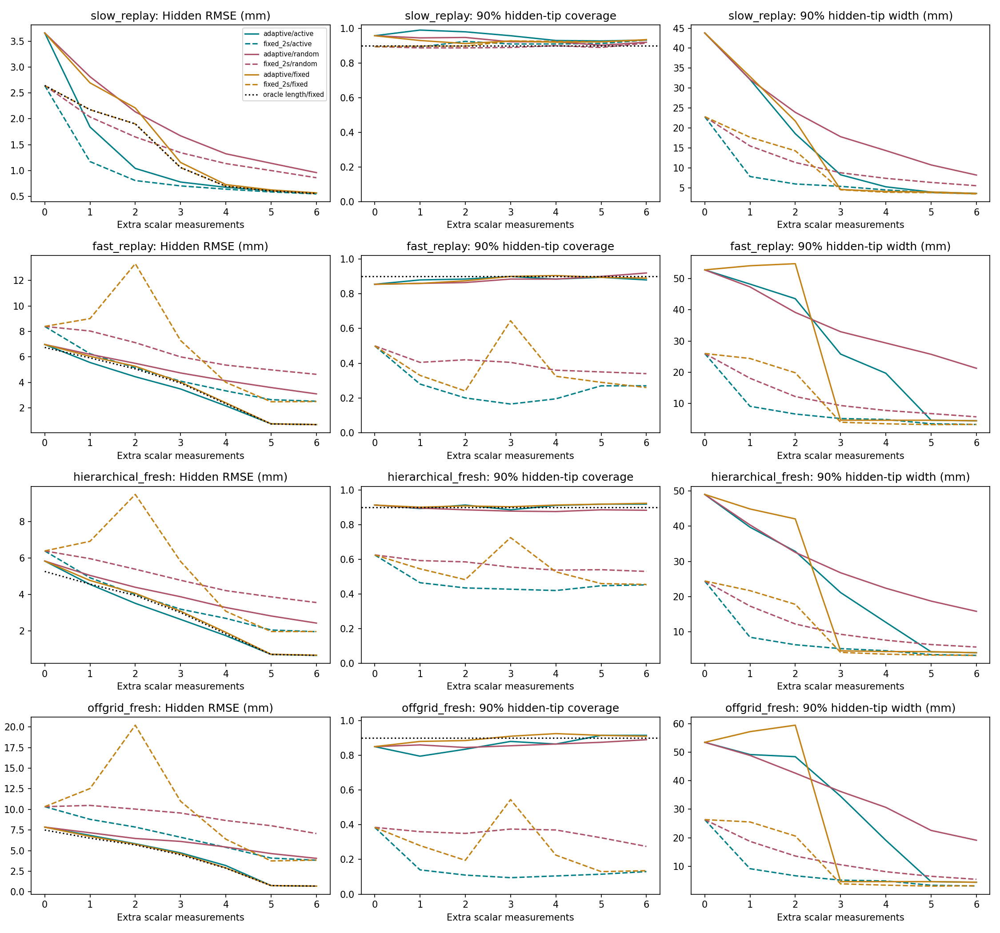
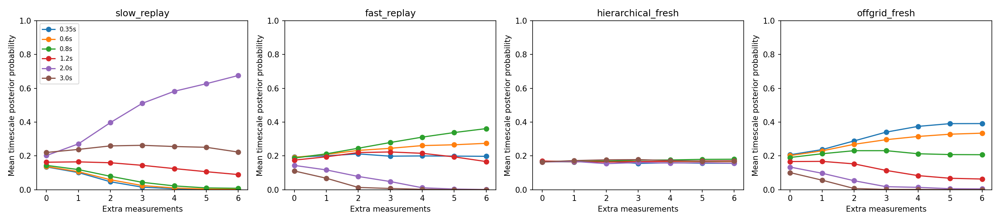

The policy uses observations to update the posterior, then selects the measurement with the greatest expected reduction in hidden-deformation uncertainty. It is a one-step numerical decision rule, not a neural or reinforcement-learning policy. The score includes uncertainty over supports, forces and now force timescale.
The old prior fixes the correlation length at 2s. The new prior integrates over six timescales from 0.35 to 3s and updates their weights from acquired observations only. It retains the full mixture instead of locking onto one best timescale. Material, noise scale and force amplitude remain specified.
Solid curves: adaptive prior. Dashed curves: original fixed prior. Colors identify active/random/fixed action policies. The same initial data, potential measurements and budget are shared. Oracle-timescale fixed actions are an explicitly privileged diagnostic, never used by the policy.

| Population | Model/policy | RMSE mm | 90% coverage | Width mm | Interval score mm ↓ |
|---|---|---|---|---|---|
| slow_replay | fixed_2s/active | 0.547 | 93.2% | 3.517 | 4.001 |
| slow_replay | fixed_2s/random | 0.859 | 91.5% | 5.522 | 6.900 |
| slow_replay | fixed_2s/fixed | 0.554 | 93.2% | 3.477 | 3.944 |
| slow_replay | adaptive/active | 0.563 | 93.2% | 3.591 | 4.115 |
| slow_replay | adaptive/random | 0.959 | 92.0% | 8.193 | 9.248 |
| slow_replay | adaptive/fixed | 0.567 | 93.5% | 3.583 | 4.071 |
| slow_replay | oracle_length/fixed | 0.554 | 93.2% | 3.477 | 3.944 |
| fast_replay | fixed_2s/active | 2.525 | 27.0% | 3.253 | 76.539 |
| fast_replay | fixed_2s/random | 4.638 | 34.0% | 5.708 | 123.988 |
| fast_replay | fixed_2s/fixed | 2.504 | 26.0% | 3.276 | 71.474 |
| fast_replay | adaptive/active | 0.697 | 88.0% | 4.441 | 5.670 |
| fast_replay | adaptive/random | 3.104 | 92.0% | 21.270 | 28.818 |
| fast_replay | adaptive/fixed | 0.697 | 89.0% | 4.445 | 5.630 |
| fast_replay | oracle_length/fixed | 0.694 | 88.5% | 4.438 | 5.607 |
| hierarchical_fresh | fixed_2s/active | 1.943 | 45.2% | 3.351 | 59.627 |
| hierarchical_fresh | fixed_2s/random | 3.549 | 53.0% | 5.715 | 94.282 |
| hierarchical_fresh | fixed_2s/fixed | 1.951 | 45.5% | 3.352 | 58.650 |
| hierarchical_fresh | adaptive/active | 0.640 | 91.8% | 4.103 | 5.003 |
| hierarchical_fresh | adaptive/random | 2.418 | 88.2% | 15.839 | 19.218 |
| hierarchical_fresh | adaptive/fixed | 0.650 | 92.2% | 4.112 | 4.991 |
| hierarchical_fresh | oracle_length/fixed | 0.644 | 92.0% | 4.038 | 4.948 |
| offgrid_fresh | fixed_2s/active | 3.834 | 13.0% | 3.117 | 137.365 |
| offgrid_fresh | fixed_2s/random | 7.071 | 27.5% | 5.441 | 181.893 |
| offgrid_fresh | fixed_2s/fixed | 3.848 | 13.5% | 3.181 | 137.229 |
| offgrid_fresh | adaptive/active | 0.693 | 91.5% | 4.420 | 5.083 |
| offgrid_fresh | adaptive/random | 4.060 | 89.0% | 19.129 | 26.708 |
| offgrid_fresh | adaptive/fixed | 0.696 | 91.0% | 4.422 | 5.100 |
| offgrid_fresh | oracle_length/fixed | 0.695 | 91.0% | 4.434 | 5.113 |

Under the 2s prior, fast-force trajectories have expected standardized prior energy 1140.8 per degree of freedom (1 would be expected under the prior). The problem is strong suppression of rapid force modes, not an unconverged sampling chain. Even with exactly observed forces at 1,4,8s, the 5s force SD is 0.022N under the smooth model versus 0.053N under the faster model.
The slow/fast replay populations reuse the prior study's data to diagnose the change. Fresh hierarchical draws test calibration under the complete new prior. The fresh 0.5s population is off the inference grid and tests limited misspecification. Fixed-timescale conditional coverage and marginal hierarchical calibration are distinct claims; see the full metrics and all-stage gates.
The beam is quasistatic with replayable loads, known cameras/material/correspondences and ideal calibrated probes. Tracks are fitted, not rendered pixels. This is not an online camera controller or a guarantee under jumps, contact, unknown amplitudes or changing smoothness within an episode. Reducing uncertainty alone does not establish correctness.
Metrics, paired differences and all-stage checks · Execution provenance · Full archive replay